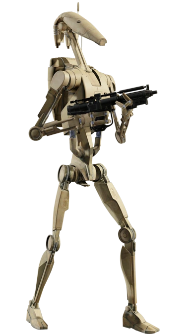
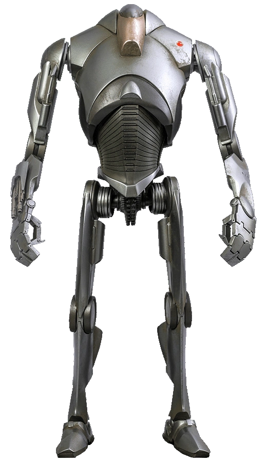
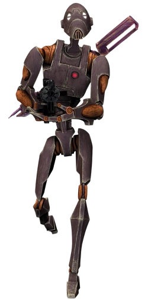

A B1-sorozatú harci droidok, más néven B1 harci droidok, szabványos harci droidok, klankerek vagy tinniék voltak a Baktoid Combat Automata és a Baktoid Armor Workshop által gyártott, túlnyomórészt használt harci droidok. Annak ellenére, hogy széles körben gyártották és telepítették őket, a B1-es sorozatú harci droidot gyengén tervezték és könnyen elpusztították, és csak jelentős számban volt sikeres.

A B2-sorozatú szuper harci droidok más néven B2 szuper harci droidok, szuper harci droidok vagy szuper droidok egy fejlett harci droid volt.
